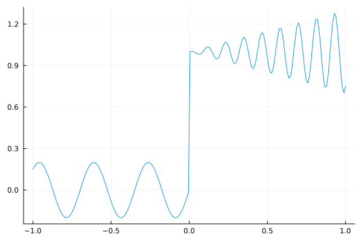
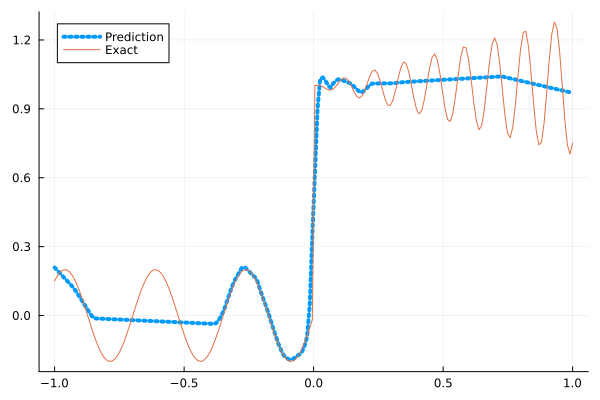
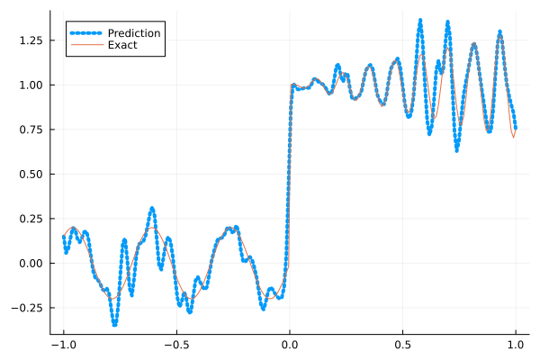
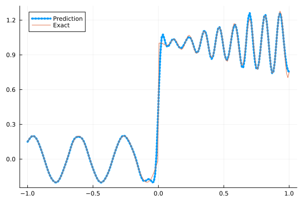
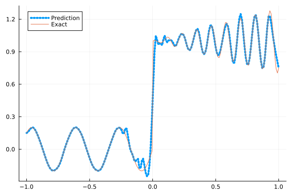

Fitting a nonlinear discontinuous function
This example is taken from here. However, we do not use adaptive activation functions. Instead, we show that using suitable non-parametric activation functions immediately performs better.
Consider the following discontinuous function with discontinuity at $x=0$:
\[u(x)= \begin{cases}0.2 \sin (18 x) & \text { if } x \leq 0 \\ 1+0.3 x \cos (54 x) & \text { otherwise }\end{cases}\]
The domain is $[-1,1]$. The number of training points used is 50.
Import pacakges
using Lux, Sophon
using NNlib, Optimisers, Plots, Random, StatsBase, ZygoteDataset
function u(x)
if x <= 0
return 0.2 * sin(18 * x)
else
return 1 + 0.3 * x * cos(54 * x)
end
end
function generate_data(n=50)
x = reshape(collect(range(-1.0f0, 1.0f0, n)), (1, n))
y = u.(x)
return (x, y)
endgenerate_data (generic function with 2 methods)Let's visualize the data.
x_train, y_train = generate_data(50)
x_test, y_test = generate_data(200)
Plots.plot(vec(x_test), vec(y_test),label=false)
Naive Neural Nets
First we demonstrate show naive fully connected neural nets could be really bad at fitting this function.
model = FullyConnected((1,50,50,50,50,1), relu)Chain(
layer_1 = Dense(1 => 50, relu), # 100 parameters
layer_2 = Dense(50 => 50, relu), # 2_550 parameters
layer_3 = Dense(50 => 50, relu), # 2_550 parameters
layer_4 = Dense(50 => 50, relu), # 2_550 parameters
layer_5 = Dense(50 => 1), # 51 parameters
) # Total: 7_801 parameters,
# plus 0 states, summarysize 80 bytes.Train the model
function train(model, x, y)
ps, st = Lux.setup(Random.default_rng(), model)
opt = Adam()
st_opt = Optimisers.setup(opt,ps)
function loss(model, ps, st, x, y)
y_pred, _ = model(x, ps, st)
mes = mean(abs2, y_pred .- y)
return mes
end
for i in 1:2000
gs = gradient(p->loss(model,p,st,x,y), ps)[1]
st_opt, ps = Optimisers.update(st_opt, ps, gs)
if i % 100 == 1 || i == 2000
println("Epoch $i || ", loss(model,ps,st,x,y))
end
end
return ps, st
endtrain (generic function with 1 method)Plot the result
@time ps, st = train(model, x_train, y_train)
y_pred = model(x_test,ps,st)[1]
Plots.plot(vec(x_test), vec(y_pred),label="Prediction",line = (:dot, 4))
Plots.plot!(vec(x_test), vec(y_test),label="Exact",legend=:topleft)Epoch 1 || 0.5682402271765532
Epoch 101 || 0.01652211934922341
Epoch 201 || 0.014920852094338733
Epoch 301 || 0.013729717625936206
Epoch 401 || 0.013478391753675108
Epoch 501 || 0.012710198618426623
Epoch 601 || 0.012812455164949362
Epoch 701 || 0.01250952914049273
Epoch 801 || 0.012642490793261942
Epoch 901 || 0.012432880419108554
Epoch 1001 || 0.012429182177180111
Epoch 1101 || 0.01243689585564654
Epoch 1201 || 0.012364435940176631
Epoch 1301 || 0.01242826788364361
Epoch 1401 || 0.012291186274182034
Epoch 1501 || 0.012257584596996123
Epoch 1601 || 0.012270213172839767
Epoch 1701 || 0.012257907187238492
Epoch 1801 || 0.012297583033812908
Epoch 1901 || 0.01232567142792789
Epoch 2000 || 0.012299707421181758
10.482756 seconds (13.14 M allocations: 1.482 GiB, 5.23% gc time, 91.83% compilation time)
Siren
We use four hidden layers with 50 neurons in each.
model = Siren(1,50,50,50,50,1; omega = 30f0)Chain(
layer_1 = Dense(1 => 50, sin), # 100 parameters
layer_2 = Dense(50 => 50, sin), # 2_550 parameters
layer_3 = Dense(50 => 50, sin), # 2_550 parameters
layer_4 = Dense(50 => 50, sin), # 2_550 parameters
layer_5 = Dense(50 => 1), # 51 parameters
) # Total: 7_801 parameters,
# plus 0 states, summarysize 88 bytes.@time ps, st = train(model, x_train, y_train)
y_pred = model(x_test,ps,st)[1]
Plots.plot(vec(x_test), vec(y_pred),label="Prediction",line = (:dot, 4))
Plots.plot!(vec(x_test), vec(y_test),label="Exact",legend=:topleft)Epoch 1 || 1.0497770842450818
Epoch 101 || 0.0010849720168739385
Epoch 201 || 2.479842484531751e-5
Epoch 301 || 3.859262541875097e-7
Epoch 401 || 2.4088903192178607e-9
Epoch 501 || 7.72823930121969e-12
Epoch 601 || 3.9966418035989537e-13
Epoch 701 || 6.215101363287464e-14
Epoch 801 || 4.625639639137357e-14
Epoch 901 || 4.354076403861657e-14
Epoch 1001 || 7.44901310097995e-14
Epoch 1101 || 7.193706473446953e-14
Epoch 1201 || 3.246633519807137e-14
Epoch 1301 || 3.465429947401381e-14
Epoch 1401 || 6.767100882986674e-14
Epoch 1501 || 3.402670830263151e-14
Epoch 1601 || 6.381917032484735e-14
Epoch 1701 || 8.975706397798582e-14
Epoch 1801 || 5.527206581546249e-14
Epoch 1901 || 6.639378714862584e-14
Epoch 2000 || 6.990243026889365e-14
5.317471 seconds (8.16 M allocations: 1.298 GiB, 5.22% gc time, 82.59% compilation time)
As we can see the model overfits the data, and the high frequencies cannot be optimized away. We need to tunning the hyperparameter omega
model = Siren(1,50,50,50,50,1; omega = 10f0)Chain(
layer_1 = Dense(1 => 50, sin), # 100 parameters
layer_2 = Dense(50 => 50, sin), # 2_550 parameters
layer_3 = Dense(50 => 50, sin), # 2_550 parameters
layer_4 = Dense(50 => 50, sin), # 2_550 parameters
layer_5 = Dense(50 => 1), # 51 parameters
) # Total: 7_801 parameters,
# plus 0 states, summarysize 88 bytes.@time ps, st = train(model, x_train, y_train)
y_pred = model(x_test,ps,st)[1]
Plots.plot(vec(x_test), vec(y_pred),label="Prediction",line = (:dot, 4))
Plots.plot!(vec(x_test), vec(y_test),label="Exact",legend=:topleft)Epoch 1 || 0.8295449649007921
Epoch 101 || 0.0070994816206684
Epoch 201 || 0.005525795728105973
Epoch 301 || 0.004613414981124359
Epoch 401 || 0.003596188187551954
Epoch 501 || 0.002589797203632397
Epoch 601 || 0.0019144290239972777
Epoch 701 || 0.0014025150875518907
Epoch 801 || 0.0008867203610833807
Epoch 901 || 0.0004269993092758499
Epoch 1001 || 0.00016451399112122063
Epoch 1101 || 7.76665962897652e-5
Epoch 1201 || 5.2665325864633235e-5
Epoch 1301 || 4.262736004183093e-5
Epoch 1401 || 3.700776999252416e-5
Epoch 1501 || 3.3219825407050246e-5
Epoch 1601 || 3.0328016424810664e-5
Epoch 1701 || 2.7906168536756166e-5
Epoch 1801 || 2.5742876054540026e-5
Epoch 1901 || 2.3727954121918827e-5
Epoch 2000 || 2.1824784130187647e-5
0.805472 seconds (1.15 M allocations: 892.477 MiB, 9.87% gc time)
Gaussian activation function
We can also try using a fully connected net with the gaussian activation function.
model = FullyConnected((1,50,50,50,50,1), gaussian)Chain(
layer_1 = Dense(1 => 50, gaussian), # 100 parameters
layer_2 = Dense(50 => 50, gaussian), # 2_550 parameters
layer_3 = Dense(50 => 50, gaussian), # 2_550 parameters
layer_4 = Dense(50 => 50, gaussian), # 2_550 parameters
layer_5 = Dense(50 => 1), # 51 parameters
) # Total: 7_801 parameters,
# plus 0 states, summarysize 80 bytes.@time ps, st = train(model, x_train, y_train)
y_pred = model(x_test,ps,st)[1]
Plots.plot(vec(x_test), vec(y_pred),label="Prediction",line = (:dot, 4))
Plots.plot!(vec(x_test), vec(y_test),label="Exact",legend=:topleft)Epoch 1 || 0.30779576028037253
Epoch 101 || 0.00565800663684207
Epoch 201 || 0.005030983730732153
Epoch 301 || 0.004610108057599042
Epoch 401 || 0.003945748752100412
Epoch 501 || 0.001592116198707552
Epoch 601 || 4.9600411856939394e-5
Epoch 701 || 1.347384281099747e-6
Epoch 801 || 1.277117021684111e-6
Epoch 901 || 2.8205646749677674e-7
Epoch 1001 || 2.4818774034134854e-5
Epoch 1101 || 1.858051203985163e-7
Epoch 1201 || 1.8055784741347794e-7
Epoch 1301 || 1.76233242631871e-5
Epoch 1401 || 5.4885226734952354e-5
Epoch 1501 || 7.819817674004827e-7
Epoch 1601 || 6.252330035171684e-8
Epoch 1701 || 1.807165210899379e-6
Epoch 1801 || 7.152111727157088e-5
Epoch 1901 || 0.0061143039401800724
Epoch 2000 || 3.2120353763412796e-6
4.969124 seconds (7.29 M allocations: 1.252 GiB, 5.78% gc time, 79.04% compilation time)
Quadratic activation function
quadratic is much cheaper to compute compared to the Gaussain activation function.
model = FullyConnected((1,50,50,50,50,1), quadratic)Chain(
layer_1 = Dense(1 => 50, quadratic), # 100 parameters
layer_2 = Dense(50 => 50, quadratic), # 2_550 parameters
layer_3 = Dense(50 => 50, quadratic), # 2_550 parameters
layer_4 = Dense(50 => 50, quadratic), # 2_550 parameters
layer_5 = Dense(50 => 1), # 51 parameters
) # Total: 7_801 parameters,
# plus 0 states, summarysize 80 bytes.@time ps, st = train(model, x_train, y_train)
y_pred = model(x_test,ps,st)[1]
Plots.plot(vec(x_test), vec(y_pred),label="Prediction",line = (:dot, 4))
Plots.plot!(vec(x_test), vec(y_test),label="Exact",legend=:topleft)Epoch 1 || 0.34338446753191865
Epoch 101 || 0.005857491510402527
Epoch 201 || 0.005084399980132097
Epoch 301 || 0.0040550126733811314
Epoch 401 || 0.0021616084819005644
Epoch 501 || 0.0009028798236738229
Epoch 601 || 0.00010266113866711926
Epoch 701 || 1.4450874243782858e-5
Epoch 801 || 1.1743230002311933e-6
Epoch 901 || 2.794252790875094e-7
Epoch 1001 || 1.652515097258282e-5
Epoch 1101 || 8.708695338003948e-8
Epoch 1201 || 5.282634815764682e-5
Epoch 1301 || 3.872888197613402e-8
Epoch 1401 || 0.00013890248081802658
Epoch 1501 || 5.322198913479151e-7
Epoch 1601 || 8.88402882559917e-6
Epoch 1701 || 5.323283407967414e-7
Epoch 1801 || 2.0423307954771815e-7
Epoch 1901 || 3.975318393693383e-5
Epoch 2000 || 9.553876867022363e-7
4.455116 seconds (7.04 M allocations: 1.235 GiB, 6.46% gc time, 84.55% compilation time)
Conclusion
"Neural networks suppresse high frequency components" is a misinterpretation of the spectral bias. The accurate way of putting it is that the lower frequencies in the error are optimized first in the optimization process. This can be seen in Siren's example of overfitting data, where you do not have implicit regularization. The high frequency in the network will never go away because it has fitted the data perfectly.
Mainstream attributes the phenomenon that neural networks "suppress" high frequencies to gradient descent. This is not the whole picture. Initialization also plays an important role. Siren mitigats this problem by initializing larger weights in the first layer, while activation functions such as gassian have large enough gradients and sufficiently large support of the second derivative with proper hyperparameters. Please refer to Vincent Sitzmann, Julien Martel, Alexander Bergman, David Lindell, Gordon Wetzstein (2020), Sameera Ramasinghe, Simon Lucey (2021) and Sameera Ramasinghe, Lachlan MacDonald, Simon Lucey (2022) if you want to dive deeper into this.